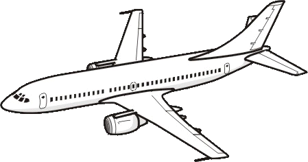

Aviation English: Parts of a plane vocabulary part 1 exercise
Knowing and remembering the names of the different parts and sections of an aircraft/airplane in English is essential for both flying a plane and wanting to become a pilot.
To help you to both learn and (more importantly) remember the names in English, I have created the below exercise. Through first reading a text and then doing a quiz/text you will quickly learn what the main parts of an airplane are and what they are used for.
If you already know these names and just want to test yourself, you can go directly to the quiz/test and do that.
This is the first part of two exercises on parts of a plane vocabulary in English. In the second part of this exercise, you will learn the names of the different parts of an aircraft which are used to make the plane move (go up and down, and left and right).
To see our other exercises on aviation English vocabulary, go to our aviation English exercise menu.
To help you know what the parts are, when reading the text look at the drawing of an aircraft below. This drawing shows all the parts of an aircraft you'll learn in this exercise except two (the propeller and the landing gear).
Exercise: Describing parts of a plane
In the following conversation, Peter (a professional pilot) explains to Juan (a Spanish trainee pilot) the names in English of the different parts of an airplane.
From using both the text and the image of aircraft above, try to guess what each aircraft part in bold in the text is. Then do the quiz at the end to check if you are right.
Peter:'So now, I'm going to ask you about what the different parts of a plane are.'
Juan:'Ok.'
Peter:'So what's the main part of a plane called? The part which contains the passengers, crew and cargo?'
Juan:'I think that's called the fuselage.'
Peter:'That's right. And what do you call the front part of the fuselage?'
Juan:'That's called the nose. And the section at the back of the airplane is called the tail.'
Peter:'Perfect. And the part of the fuselage behind the nose where the pilots fly the aircraft from?'
Juan:'That's called the flight deck.'
Peter:'Yes it is, but it is more commonly called the cockpit. And what's the section of the plane where the passengers travel in?'
Juan:'That's called the cabin.'
Peter:'And the section under the cabin where the passengers suitcases, bags and other things are carried?'
Juan:'That's called the hold or baggage hold.'
Peter:'Perfect. So what are the wheels called which an aircraft uses when travelling on the ground?'
Juan:'They are called the landing gear and they are on the bottom of the aircraft.'
Peter:'Is the landing gear just attached to the fuselage of the plane?'
Juan:'No, some of the landing gear is also attached to the wings as well. The two long horizontal parts of the aircraft attached to the middle part of the fuselage.'
Peter:'Good. And what do you call the things which power the aircraft so it can move and fly?'
Juan:'That depends on the type of aircraft. On some aircraft (especially bigger ones), they are powered by jet engines which are attached to the wings. On other aircraft (especially smaller ones), they are powered by a propeller which is normally attached to the nose of the airplane.'
Peter:'Perfect.'
Quiz:
Below is a photo/picture of each of the parts of a plane in bold from the above text. Now choose the part from the question's selection box which you believe matches the photo/picture. Only use each part once. Click on the "Check" button at the bottom of the quiz to check your answers.
When the answer is correct, two icons will appear below the answer. The " " icon contains extra information on the part of the plane. In the "
" icon contains extra information on the part of the plane. In the " " icon, you can listen to the pronunciation of the name.
" icon, you can listen to the pronunciation of the name.

Practice
Now that you understand the vocabulary, practise it. Click on the " " icon under each correct answer and listen to the name of the part of the aircraft and then test your own pronunciation in the 'prounciation speaking test'. Then create your own sentences with the new words/phrases.
" icon under each correct answer and listen to the name of the part of the aircraft and then test your own pronunciation in the 'prounciation speaking test'. Then create your own sentences with the new words/phrases.
Follow us on